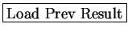

Next: Batch-mode/Nongraphical processing option
Up: User Manual
Previous: Display BestStrf
Contents
>From the main window, there is a button called, located
in the right bottom corner. This button loads
and displays results for data sets on which STRFPAK has already run.
 will ask for a directory in which results are stored, and load as much information about a previous STRFPAK session as possible. The user can then resume examining previous work.
2004-08-09